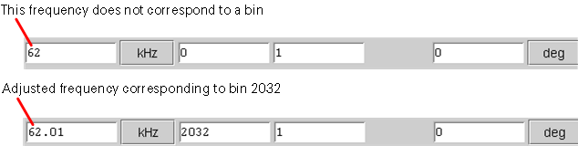

Defining a Tone
- Either
- Enter the bin number n (n is an element of [1, N]) in the Bin column of a
line. The corresponding tone frequency n × Fs/(2N) will be displayed in the Frequency
column.
or
- Select the frequency unit (Hz, kHz or MHz) by clicking the button to the right of the Frequency entry field and then enter the desired tone frequency in that entry field. If the tone frequency f you entered does not correspond to a bin, according to the formula f = n × Fs/(2N), where n is an element of [1, N], the frequency will be adjusted to the closest frequency that does correspond to a bin. The following figure shows an example of this.

- Enter the bin number n (n is an element of [1, N]) in the Bin column of a
line. The corresponding tone frequency n × Fs/(2N) will be displayed in the Frequency
column.
- Enter the amplitude factor into the Ampl field. This sets the relative amplitude to the other
tones.Note The calculated waveform in the time domain will be normalized to an amplitude of ±0.5.
- Optional: Enter the phase shift (offset) of the tone in either radians or degrees. Alternatively, you can select an algorithm to determine the phase shifts during calculation of the waveform.
- If desired, you can sort all tones at any time in ascending frequency/bin order by clicking the Sort Tones button at the bottom of the dialog window.